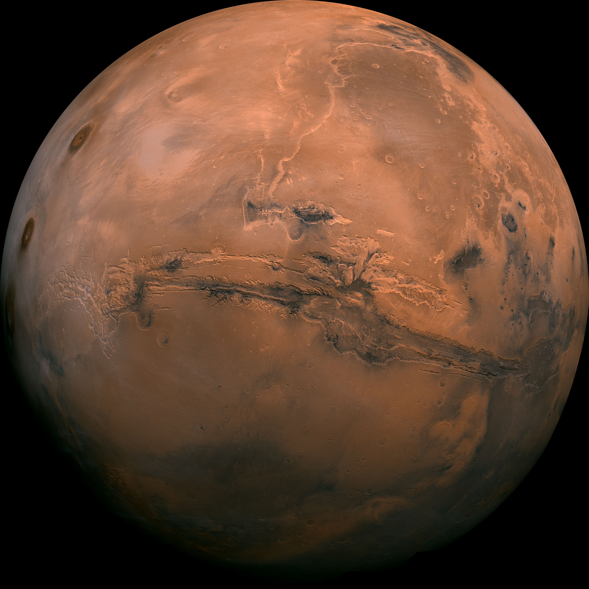

MARS EXPEDITION / SOL 001
THE NEXT
FOOTPRINT
IS YOURS.
One crew. An unfamiliar world.
A way forward. A way home.
INTERACTIVE CONCEPT · SIMULATED TERRAIN & TELEMETRY
SURFACE ATLAS / JEZERO CRATER
Perseverance traverse
Drag to follow the traverse. Select a waypoint to see its record.
JEZERO SURFACE ATLASSELECT A WAYPOINTNASA / JPL-CALTECH / MSSS · MARS TREK CTX
ESTABLISHING SURFACE LINKNEBULA–01DESCENDING TO ROVER
SURFACE LINK ACTIVEJEZERO SECTOR / CONCEPT SIMULATION
↱Ready to explore
Mission destinationSelect a route, then begin your drive EXTERIOR— °CDATA PENDING
BATTERY100 %
RETURN RESERVE47 MINSIMULATED LOCAL POSITIONMISSION DESTINATION28 MIN / 3.2 KM
PROJECTED PATH ◆
00KM/H
SIMULATED
ELAPSED00:00STANDBY
BASE ○ ───────── ◇ DESTINATION
ILLUSTRATIVE 3D TERRAIN · NOT NASA IMAGERY · NOT FOR REAL NAVIGATION